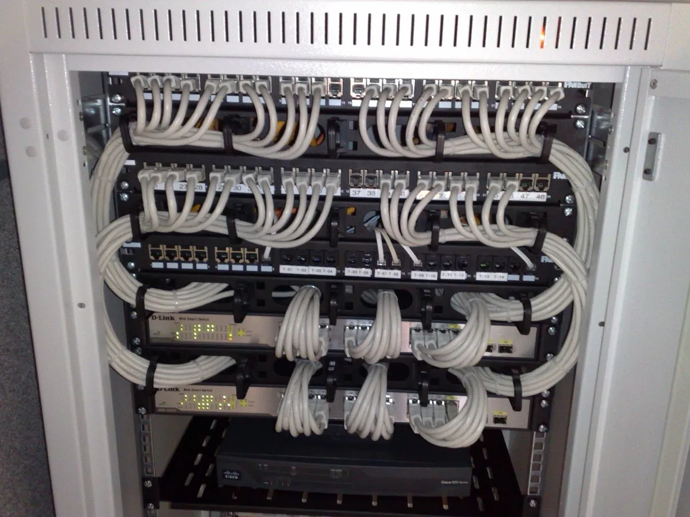
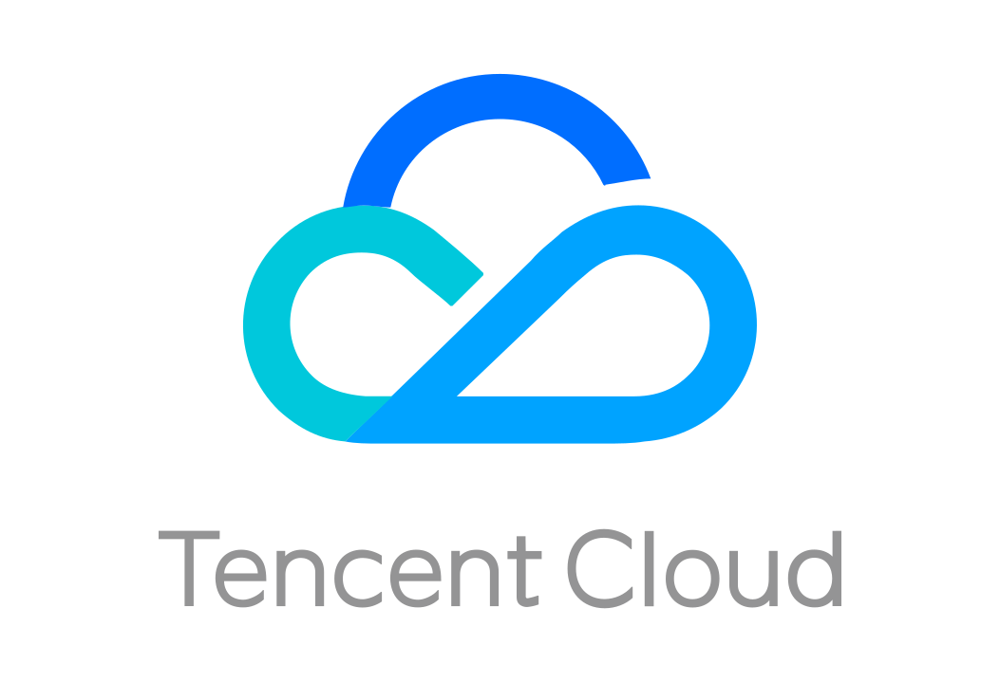

What to remember
Most of this day is context. These four points are the ones that turn into exam questions.
- AWS secures the cloud; you secure what you put in it. Where that line sits depends on the service. → 05
- You always own your data and your access controls, in every model, including SaaS. AWS never takes that over. → 05
- IaaS / PaaS / SaaS by example: EC2 / Elastic Beanstalk / Gmail. Know which is which by who manages the operating system. → 05
- A Region contains at least three Availability Zones, isolated and physically separate. Region ≠ AZ, and the exam leans on the difference. → 08
01 Why cloud exists
Because demand is spiky and hardware is not.
To run a service yourself you must own three things outright: internet, hardware and electricity. All three are bought ahead of time, and all three are sized for the worst day of the year.
That is the whole problem. Traffic arrives in spikes; servers arrive in fixed quantities with a six-week lead time. So you buy for the peak, pay for the peak, and use the average.
Photo by Hugo van Meijeren, Wikimedia Commons, CC BY-SA 3.0.
{kind=link}
Over-provision and you pay for idle machines every hour they are not needed. Under-provision and the service falls over on the day it finally matters. Before the cloud you had to pick one; there was no third option.
02 What you are renting
Four primitives, from someone else's data centre.
| Primitive | What it is | AWS example |
|---|---|---|
| Compute | Somewhere to run code | |
| Storage | Somewhere to keep files and blocks | |
| Database | Somewhere to keep structured, queryable data | |
| Network | The wiring between all of it, and to the internet |
Everything else in the 200-plus service catalogue is a convenience built on top of these four. A provider is simply whoever rents them to you: AWS, Azure, Google Cloud, Alibaba, Tencent.
↑ top03 The benefits
AWS publishes six. Learn them in AWS's words, because that is the wording the exam uses.
| AWS's wording | What it means in practice |
|---|---|
| Trade fixed expense for variable expense | Stop buying servers up front. Pay per hour, per GB, per request. Capital expenditure becomes operating expenditure. |
| Benefit from massive economies of scale | Hundreds of thousands of customers' usage is aggregated, so the per-unit price is lower than you could ever reach alone. |
| Stop guessing capacity | Scale up and down on demand instead of committing to a number months in advance. |
| Increase speed and agility | New resources are minutes away instead of weeks, so experiments become cheap. |
| Stop spending money running data centres | No racking, stacking or powering. Effort moves to what differentiates the business. |
| Go global in minutes | Deploy near users in another continent without building anything there. |
How the class list maps onto those six
| From class | AWS's equivalent |
|---|---|
| Easy setup | Increase speed and agility |
| Cost, like rent (pay as you go) | Trade fixed expense for variable expense + economies of scale |
| Scalability, manual or automatic | Stop guessing capacity |
| High reliability, fault tolerance | Not one of the six — it comes from Regions and Availability Zones instead |
| Little to no maintenance | Stop spending money running data centres |
| Global access and availability | Go global in minutes |
Moving to a managed service does not hand security over. It moves the boundary, and everything on your side of it is still yours to get right. Most real breaches are misconfigured buckets and over-broad IAM policies, which are all customer-side. See section 05.
04 Same problems, new names
Nothing in AWS is a new idea. Every service replaces a box that used to sit in a rack.
| Layer | Traditional, on-premises | AWS |
|---|---|---|
| Security | Firewalls, ACLs, administrators | Security groups, network ACLs, |
| Networking | Router, network pipeline, switch | Elastic Load Balancing |
| Compute | On-premises servers | AMI → |
| Storage and database | DAS, SAN, NAS, RDBMS |

Photo by Dsimic, Wikimedia Commons, CC BY-SA 4.0.
{kind=link}
The storage mapping is worth memorising
| Was | Now | Why it matches |
|---|---|---|
| DAS direct-attached | A disk attached to exactly one machine. Block storage. | |
| NAS network-attached | One file system mounted by many machines at once. | |
| SAN storage-area network | Block storage over a network fabric. EBS is the closest equivalent. | |
| RDBMS | The same relational engines, with the operating system and patching taken over. | |
| — no equivalent | Object storage has no on-premises ancestor. Not a disk and not a file system: flat keys, HTTP access, effectively unlimited. |
An AMI (Amazon Machine Image) is the template: a frozen disk image plus settings. An EC2 instance is a running machine launched from it. One AMI, many identical instances — which is what makes autoscaling possible at all.
05 Service models
IaaS, PaaS and SaaS are one idea seen at three depths: how far up the stack the provider takes over.
| Layer | On-premises | IaaS | PaaS | SaaS |
|---|---|---|---|---|
| Applications | You | You | You | Provider |
| Data | You | You | You | Provider |
| Runtime | You | You | Provider | Provider |
| Middleware | You | You | Provider | Provider |
| Operating system | You | You | Provider | Provider |
| Virtualization | You | Provider | Provider | Provider |
| Servers | You | Provider | Provider | Provider |
| Storage | You | Provider | Provider | Provider |
| Networking | You | Provider | Provider | Provider |
The classic diagram shades all nine SaaS layers as the provider's, data included. That is wrong in the way that costs marks and, later, money.
Under the AWS shared responsibility model, the customer always owns their data and their access controls, at every service level. AWS is responsible for security of the cloud — hardware, software, networking, facilities. You are responsible for security in the cloud — your data, who can reach it, and how it is encrypted. Nothing you buy transfers that.
| Model | You get | Examples | Who patches the OS |
|---|---|---|---|
| IaaS | Raw hardware, virtualized | EC2, Azure Virtual Machines | You |
| PaaS | An operating system and runtime, ready to deploy into | Elastic Beanstalk, Google App Engine | Provider |
| SaaS | Finished software | Gmail, Dropbox, Salesforce | Provider |
If a question is ambiguous, ask who patches the operating system. That single question separates IaaS from everything above it.
Pizza as a service
Photo by Shisma, Wikimedia Commons, CC BY 4.0.
{kind=link}
| You want pizza | You provide | Model |
|---|---|---|
| Make it at home | Ingredients, oven, gas, table, drinks | On-premises |
| Take-and-bake | Oven, gas, table, drinks | IaaS |
| Delivered | Table, drinks | PaaS |
| Eat at the restaurant | Nothing but the appetite | SaaS |
06 Deployment models
The service model is how much is managed. The deployment model is whose hardware it runs on.
Shared tenancy Public cloud
- One provider's hardware, many organisations on it
- Cheapest and fastest to start
- AWS, Azure, Google Cloud
Single tenant Private cloud
- Dedicated to one organisation
- Chosen for security posture and regulatory compliance
- You carry the cost of the whole thing, busy or idle
Both at once Hybrid cloud
- Sensitive workloads stay private, the rest goes public
- A balance of cost, performance and compliance
- Typical of healthcare and banking, where some records legally cannot leave
More than one provider Multi-cloud
- Deliberately spread across providers
- Avoids vendor lock-in and single-provider outages
- The most complex to operate: two of everything, including skills
07 The catch
Five real costs, none of which appear on the marketing page.
| Challenge | What it actually means |
|---|---|
| Internet dependency | No connection, no service. The link becomes a single point of failure you do not control. |
| Ongoing cost | A server is bought once; a cloud bill arrives every month forever. Over a long enough horizon, rent exceeds purchase. |
| Data security and compliance | Your data sits on someone else's hardware, under the laws of whichever country that hardware is in. A provider served a lawful order will comply. |
| Vendor lock-in | The more managed services you adopt, the more rewriting it takes to leave. Convenience and portability trade against each other. |
| Limited control | You cannot inspect the hypervisor, choose the exact hardware, or fix an outage yourself. You wait for the status page like everyone else. |
08 Providers, and why AWS
Five providers matter. One of them is the exam.
The market is AWS, Microsoft Azure, Google Cloud, Alibaba Cloud and Tencent Cloud. By infrastructure revenue the first three hold roughly two thirds of it between them, AWS the largest single share.
 Microsoft AzureSecond largest. Strong where the organisation already runs Microsoft.
Microsoft AzureSecond largest. Strong where the organisation already runs Microsoft.
 Google CloudThird. Known for data, analytics and Kubernetes.
Google CloudThird. Known for data, analytics and Kubernetes.
 Alibaba CloudThe largest provider in China.
Alibaba CloudThe largest provider in China.

Tencent CloudAlso China-centred, strong in gaming and media.Logos are the trademarks of their respective owners, shown here to identify each provider. AWS mark from the AWS Architecture Icons; Azure and Tencent Cloud from Wikimedia Commons (public domain); Google Cloud and Alibaba Cloud from Simple Icons (CC0).
A Region is a geographic area, such as us-east-2 (Ohio). An Availability Zone is one or more discrete data centres inside that Region, with independent power, cooling and networking.
Every Region has at least three AZs, isolated and physically separate, but close enough for low-latency links. That is the mechanism behind almost every "highly available" answer on the exam: run in more than one AZ so one failure does not take the service down.
Region and AZ counts move as AWS builds. The class notes recorded 123 AZs; the live figure at the time of writing is 124. Check the source in the footer rather than trusting either number.
↑ top09 The 25 services
The course roadmap, grouped by what each service is for and tagged with the exam domain it mostly serves.
Compute Domain 3 · performance
 EC2
EC2- Virtual machines. The default answer for "a server".
 Lambda
Lambda- Run a function without a server. Pay per invocation.
 Elastic Beanstalk
Elastic Beanstalk- Hand over code, AWS provisions the stack. PaaS.
 Auto Scaling
Auto Scaling- Adds and removes instances against demand.
Containers Domain 3 · performance
 ECR
ECR- Private registry for container images.
 ECS
ECS- Runs and schedules those containers.
Storage Domains 3 & 4 · performance, cost
 S3
S3- Object storage. Flat keys over HTTP, effectively unlimited, with storage classes that trade retrieval speed against price.
Database Domain 3 · performance
 RDS
RDS- Managed relational engines: PostgreSQL, MySQL and others.
 Aurora
Aurora- AWS's own relational engine, MySQL and PostgreSQL compatible.
 DynamoDB
DynamoDB- Managed NoSQL. Single-digit millisecond reads at any scale.
- ElastiCache
- In-memory cache (Redis, Memcached) in front of a slower store.
Networking & delivery Domains 1 & 3 · security, performance
- Elastic Load Balancing
- Spreads traffic across instances and Availability Zones.
 CloudFront
CloudFront- CDN. Caches content at edge locations near users.
 Route 53
Route 53- DNS, with health checks and routing policies.
 API Gateway
API Gateway- Front door for APIs: throttling, auth, versioning.
Security & identity Domain 1 · security
 IAM
IAM- Who can do what to which resource. The largest single exam topic.
 KMS
KMS- Creates and controls the encryption keys other services use.
Messaging & integration Domain 2 · resilience
 SQS
SQS- Queue. Decouples producers from consumers so a slow consumer cannot drop work.
 SNS
SNS- Publish/subscribe. One message fans out to many subscribers.
 SES
SES- Sends transactional and bulk email.
 Step Functions
Step Functions- Orchestrates multi-step workflows with retries and state.
Management & monitoring Domain 2 · resilience
 CloudWatch
CloudWatch- Metrics, logs and alarms. What is happening.
 CloudTrail
CloudTrail- Audit log of every API call. Who did what.
 CloudFormation
CloudFormation- Infrastructure as code: the stack described in a template.
Streaming Domain 3 · performance
 Kinesis
Kinesis- Ingests continuous streams of records in real time.
They sound alike and the exam knows it. CloudWatch is metrics and logs: CPU is at 90%. CloudTrail is an audit trail of API calls: this IAM user deleted that bucket at 14:02. Performance question → CloudWatch. Who-did-this question → CloudTrail.
Deciding which of these to use for a given requirement — weighing cost, security, availability and the business goal — is the solutions architect's actual job, and the thing the exam is testing.
↑ top10 Lab: your first EC2 box
A first session on a running instance. Every line of it teaches something that comes back later.
[ec2-user@ip-172-31-40-217 ~]$ curl -s https://checkip.amazonaws.com 3.144.xx.xx [ec2-user@ip-172-31-40-217 ~]$ uname -a Linux ip-172-31-40-217.us-east-2.compute.internal ... [ec2-user@ip-172-31-40-217 ~]$ whoami ec2-user [ec2-user@ip-172-31-40-217 ~]$ mkdir practice && cd practice/ [ec2-user@ip-172-31-40-217 practice]$ touch cat.txt [ec2-user@ip-172-31-40-217 practice]$ whoami >> cat.txt [ec2-user@ip-172-31-40-217 practice]$ hostname >> cat.txt [ec2-user@ip-172-31-40-217 practice]$ date >> cat.txt [ec2-user@ip-172-31-40-217 practice]$ cat cat.txt ec2-user ip-172-31-40-217.us-east-2.compute.internal Wed Sep 10 08:12:44 UTC 2026
Public IP partly masked. Times on an EC2 instance are UTC by default, not local.
| Command | The point of it |
|---|---|
| curl checkip.amazonaws.com | Returns the instance's public IP, as the internet sees it. Compare it with the prompt, which shows the private one. They are different addresses for the same machine. |
| uname -a | Kernel and architecture. Confirms which Linux you actually landed on. |
| whoami | Returns ec2-user, the default login on Amazon Linux. Ubuntu images use ubuntu instead; using the wrong one is the most common first-SSH failure. |
| hostname | Prints the internal DNS name, which encodes the private IP and the Region. |
| >> vs > | >> appends, > overwrites. Confusing the two is how a log file becomes one line long. |
| history | Everything typed this session. Useful for writing notes afterwards — which is where this transcript came from. |
Read the prompt: it tells you four things
The hostname ip-172-31-40-217.us-east-2.compute.internal is not decoration. It decomposes:
| Part | Meaning |
|---|---|
| ip-172-31-40-217 | The private IPv4 address 172.31.40.217, with dots turned into dashes. |
| 172.31.x.x | Inside the default VPC, which AWS creates with the CIDR block 172.31.0.0/16 — about 65,000 private addresses, carved into one /20 subnet per Availability Zone. |
| us-east-2 | The Region: US East (Ohio). |
| compute.internal | AWS's internal DNS suffix. Resolvable from inside the VPC, meaningless outside it. |
A /16 fixes the first 16 bits and leaves 16 free, so 216 = 65,536 addresses. A /20 leaves 12 free: 212 = 4,096 per subnet. The private ranges — 10.0.0.0/8, 172.16.0.0/12, 192.168.0.0/16 — are the reason your instance's address starts with 172.31 and not something routable.